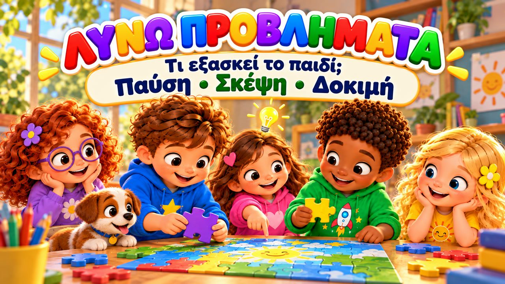
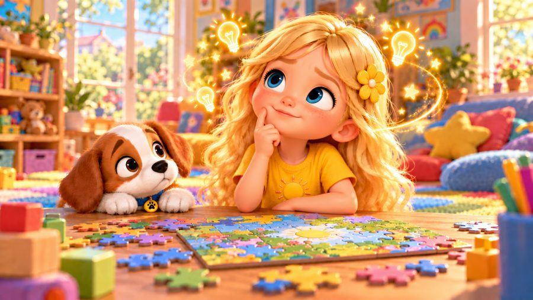
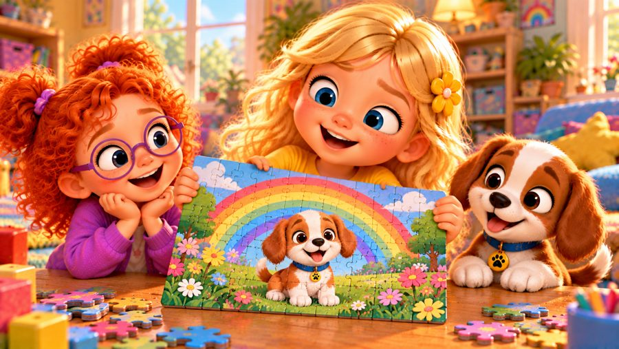
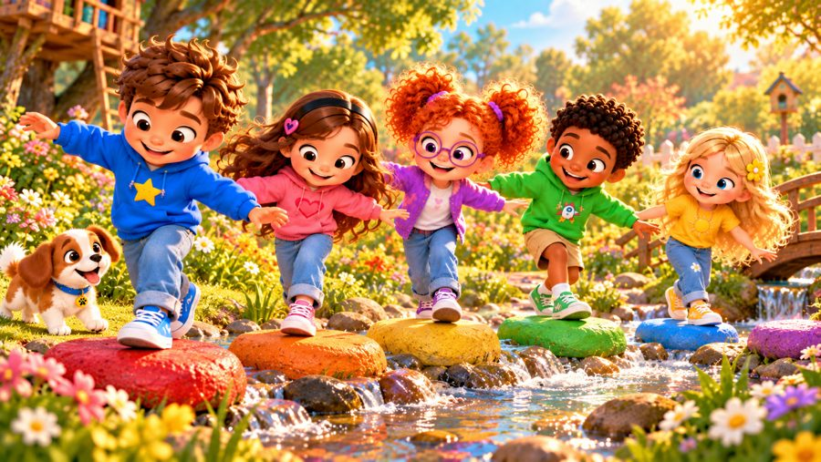
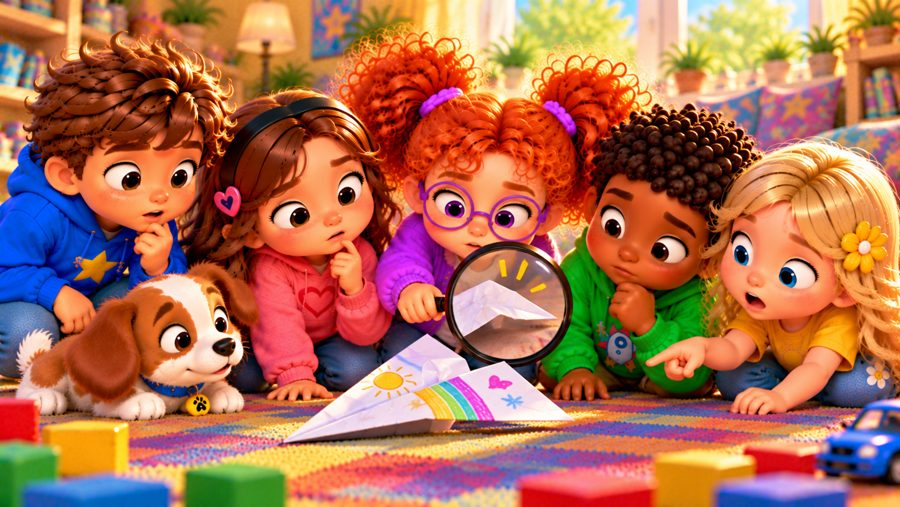
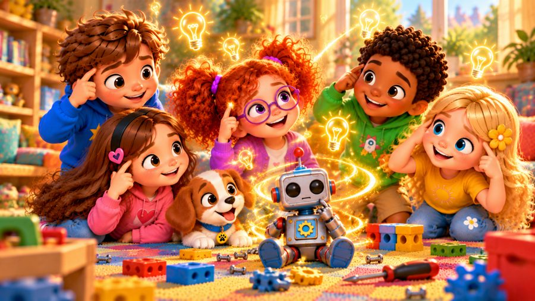
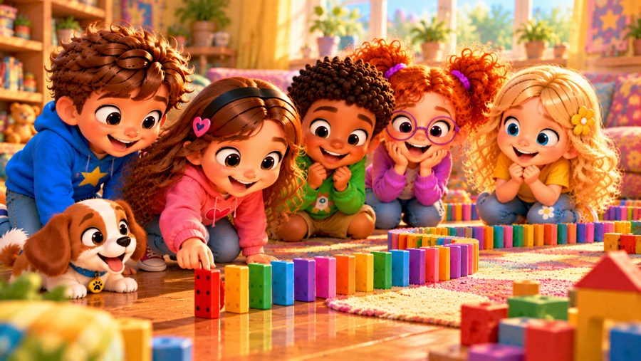

Μπορώ να το λύσω!
Ένα χαρούμενο τραγούδι για την επίλυση προβλημάτων! 🧩 Τραγουδήστε με τον Μαξ, τη Μία, τον Τζέι, τη Λίλη, τη Ρόζα και τον σκυλάκο Μπάντι, που μαθαίνουν τα βήματα για να λύνουν κάθε μικρό πρόβλημα: Σταματώ! Κοιτάζω! Σκέφτομαι! Δοκιμάζω! Ελέγχω!
Το «Μπορώ να το λύσω!» είναι ένα τραγούδι για παιδιά που διδάσκει ήρεμη, βήμα-βήμα σκέψη: ένα κομμάτι παζλ που δεν ταιριάζει, μια γέφυρα από τουβλάκια που πέφτει, ένα αεροπλανάκι που δεν πετά — και κάθε φορά βρίσκουμε λύση! Γιατί ένα πρόβλημα μπορεί να έχει πολλές λύσεις. Με μεγάλους στίχους-καραόκε στην οθόνη, ιδανικό για παιδιά 3–8 ετών, στο σπίτι, στο νηπιαγωγείο, στο δημοτικό και στα Εργαστήρια Δεξιοτήτων.

▶💡 Γιατί είναι σημαντικό: Επίλυση προβλημάτων
Η επίλυση προβλημάτων βοηθά τα παιδιά να μένουν ήρεμα, να σκέφτονται ιδέες και να τις δοκιμάζουν, αντί να τα παρατούν ή να θυμώνουν. Χτίζει αυτονομία στο σπίτι, στο σχολείο και αργότερα στη ζωή. Όταν κάτι πάει στραβά, μην το λύσετε αμέσως εσείς — ρωτήστε «Τι θα μπορούσαμε να δοκιμάσουμε;» και αφήστε το παιδί να βρει ιδέες.
👨👩👧 Τι μαθαίνει το παιδί
- Να σταματά και να ηρεμεί αντί να βιάζεται
- Να παρατηρεί και να σκέφτεται πριν δράσει
- Να δοκιμάζει μια ιδέα και να ελέγχει αν πέτυχε
- Ότι ένα πρόβλημα έχει συχνά πολλές λύσεις
- Να ρωτά, να ακούει και να διαλέγει
💬 Κουβέντα μετά το τραγούδι
- Ποιο μικρό πρόβλημα έλυσες σήμερα;
- Ποια είναι τα βήματα όταν κάτι δεν πάει καλά;
- Αν η πρώτη ιδέα δεν πετύχει, τι κάνουμε;
🏅 Κουίζ & Πτυχίο
Είδατε το τραγούδι μαζί; Τώρα διαβάστε στο παιδί κάθε ερώτηση — το παιδί δείχνει τη σωστή εικόνα. Αν απαντήσει και στις 6 ερωτήσεις, κερδίζει ένα πτυχίο για εκτύπωση!
🔒 Το όνομα χρησιμοποιείται μόνο για να φτιαχτεί το πτυχίο στη συσκευή σας. Δεν αποθηκεύουμε και δεν στέλνουμε τίποτα.
Τα κατάφερες! 🎉
Και οι 6 απαντήσεις είναι σωστές! Γράψτε το όνομα του παιδιού για να φτιαχτεί το πτυχίο.
🖨️ Δωρεάν εκτυπώσιμα
Δωρεάν για χρήση στο σπίτι και στην τάξη. Εκτυπώστε σε χαρτί Α4.
🖼️ Σκηνές από το τραγούδι






🎵 Κι άλλα τραγούδια


🎤 Στίχοι – Μπορώ να το λύσω!
Χμμ... έχω ένα πρόβλημα.
Τι μπορώ να κάνω;
Σταματώ...
Κοιτάζω...
Σκέφτομαι...
Το βρήκα!
Έχω μια ιδέα!
Ένα κομμάτι απ' το παζλ
δεν βρίσκει τη σωστή μεριά.
Το γυρίζω από δω κι από κει,
μα δεν ταιριάζει πουθενά!
Σταματώ και το κοιτάζω,
δεν χρειάζεται βιασύνη.
Βλέπω σχήματα και χρώματα...
και να! Βρήκα τη λύση!
Όταν κάτι με δυσκολεύει,
δεν χρειάζεται να βιαστώ.
Σταματώ και το κοιτάζω,
παίρνω χρόνο να σκεφτώ.
Μου ήρθε μια ιδέα;
Θα τη δοκιμάσω εγώ!
Κι αν αυτή δεν λειτουργήσει,
άλλον τρόπο θα σκεφτώ!
Μπορώ να το λύσω!
Ναι, μπορώ!
Σταματώ, κοιτάζω
και μετά θα σκεφτώ!
Σκέψου, σκέψου, σκέψου!
Τι μπορώ να κάνω;
Δοκιμάζω έναν τρόπο,
κι αν δεν κάνει, ψάχνω άλλον!
Μπορώ να το λύσω!
Βήμα βήμα προχωρώ!
Σταματώ! Κοιτάζω!
Σκέφτομαι! Δοκιμάζω!
Κι ύστερα ελέγχω...
Λειτουργεί αυτό;
Με τουβλάκια μια γέφυρα
προσπαθήσαμε να φτιάξουμε,
μα κάθε φορά που τη σηκώναμε,
την βλέπαμε να πέφτει κάτω!
«Ας την κάνουμε πιο δυνατή,
με πιο φαρδιά βάση χαμηλά!»
Δοκιμάσαμε την ιδέα
και στεκόταν μια χαρά!
Μετά το αεροπλανάκι
έπεσε στο πάτωμα ξανά.
Κοιτάξαμε καλά τα φτερά του,
ήταν λυγισμένα χαμηλά.
Τα διπλώσαμε διαφορετικά,
και δοκιμάσαμε ξανά...
Φσσστ! Πέταξε μακριά!
Βρήκαμε τη λύση τελικά!
Όταν κάτι με δυσκολεύει,
δεν χρειάζεται να βιαστώ.
Σταματώ και το κοιτάζω,
παίρνω χρόνο να σκεφτώ.
Μου ήρθε μια ιδέα;
Θα τη δοκιμάσω εγώ!
Κι αν αυτή δεν λειτουργήσει,
άλλον τρόπο θα σκεφτώ!
Μπορώ να το λύσω!
Ναι, μπορώ!
Σταματώ, κοιτάζω
και μετά θα σκεφτώ!
Σκέψου, σκέψου, σκέψου!
Τι μπορώ να κάνω;
Δοκιμάζω έναν τρόπο,
κι αν δεν κάνει, ψάχνω άλλον!
Μπορώ να το λύσω!
Βήμα βήμα προχωρώ!
Σταματώ! Κοιτάζω!
Σκέφτομαι! Δοκιμάζω!
Κι ύστερα ελέγχω...
Λειτουργεί αυτό;
Έχω ένα πρόβλημα!
ΣΤΑΜΑΤΩ!
Και μετά;
ΚΟΙΤΑΖΩ!
Τώρα τι κάνω;
ΣΚΕΦΤΟΜΑΙ!
Έχω μια ιδέα!
ΔΟΚΙΜΑΖΩ!
Πέτυχε;
ΕΛΕΓΧΩ!
Δεν πέτυχε;
ΔΕΝ ΠΕΙΡΑΖΕΙ!
Και τώρα;
ΔΟΚΙΜΑΖΩ ΑΛΛΙΩΣ!
Ένα πρόβλημα μπορεί
να έχει λύσεις πιο πολλές!
Μπορώ να ρωτήσω,
μπορώ να ακούσω,
μπορώ να σκεφτώ,
μπορώ να διαλέξω!
Κάθε πρόβλημα που βρίσκω
είναι ευκαιρία να σκεφτώ!
Μπορώ να το λύσω!
Ναι, μπορώ!
Σταματώ, κοιτάζω
και μετά θα σκεφτώ!
Σκέψου, σκέψου, σκέψου!
Τι μπορώ να κάνω;
Δοκιμάζω έναν τρόπο,
κι αν δεν κάνει, ψάχνω άλλον!
Μπορώ να το λύσω!
Βήμα βήμα προχωρώ!
Σταματώ! Κοιτάζω!
Σκέφτομαι! Δοκιμάζω!
ΣΤΑΜΑΤΩ!
ΚΟΙΤΑΖΩ!
ΣΚΕΦΤΟΜΑΙ!
ΔΟΚΙΜΑΖΩ!
ΕΛΕΓΧΩ!
Έχω μια ιδέα...
Για να δούμε αν θα πετύχει!
Μικρό ή μεγάλο,
όποιο κι αν είναι το πρόβλημα,
ξέρω τι μπορώ να κάνω!
Σταματώ,
κοιτάζω,
σκέφτομαι...
και βρίσκω μια λύση!